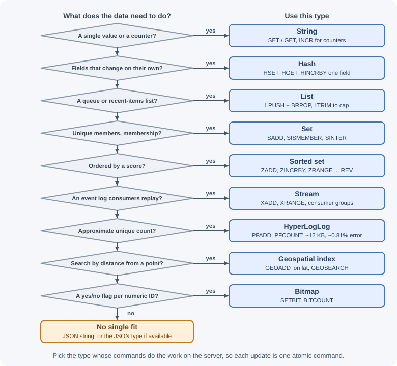
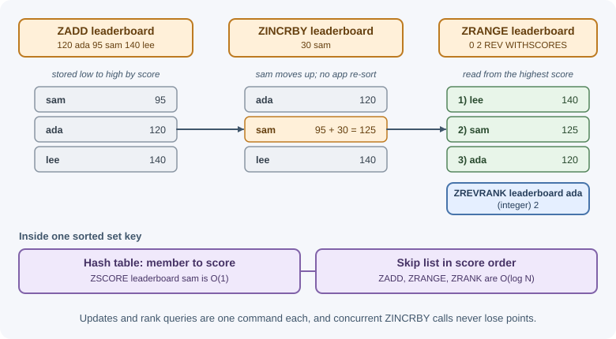

Redis Data Structures¶
Redis is called a data structure server because every value has a type, and each type comes with commands that run on the server. Instead of reading a whole value, changing it in the application, and writing it back, you ask Redis to "add 10 to this score" or "give me the top 10". This lesson covers each core type: what it is, when to use it, how fast its key commands are, and how to use it.
Why it matters¶
Choosing the right type is the most important Redis design decision. The right structure makes an operation a single atomic, fast command; the wrong one forces you to fetch large values, process them in the application, and deal with race conditions between clients. A leaderboard built on a sorted set needs one command to update and one to read; built on a JSON string it needs a read, a sort, and a write, and it breaks under concurrent updates.
Real-world usage¶
- Instagram needed to map about 300 million photo IDs to the user IDs
that created them. Plain
SET media:<id> <userId>keys took about 70 MB per million keys, so it bucketed IDs into hashes of 1,000 fields (HSET mediabucket:1155 1155315 939). Small hashes use a compact encoding, so the same million entries took about 16 MB and all 300 million fit in under 5 GB (Instagram Engineering). - Slack ran its job queue on Redis. Workers moved each job from a pending queue to an in-flight list, and the engineers later found that their choice of data structures made dequeuing cost proportional to the queue's length, so long queues became harder to drain (Slack engineering).
- BullMQ, a popular Node.js job queue, keeps job state in Redis structures, such as a waiting list that every job enters and a set for prioritized jobs, and it changes states atomically with Lua scripts (BullMQ: Architecture).
How it works¶
Overview¶
| Type | Think of it as | Typical uses |
|---|---|---|
| String | A single value (text, number, or bytes) | Cached JSON, counters, flags, tokens |
| List | An ordered sequence; fast at both ends | Simple queues, recent-activity feeds |
| Hash | A small object with fields | User profiles, object attributes, per-field counters |
| Set | Unordered unique members | Tags, followers, "who has seen this" |
| Sorted set | Unique members ordered by a score | Leaderboards, priority queues, time-ordered indexes |
| Stream | An append-only log with IDs | Event logs, durable message processing |
| Bitmap | A string treated as an array of bits | Daily active flags per user ID |
| HyperLogLog | A probabilistic unique counter | Unique visitors with tiny memory |
| Geospatial index | Members with coordinates | "Find stores near me" |
| JSON | A nested JSON document | Documents updated by path |
Complexity notation: O(1) means constant time regardless of size; O(log N) grows slowly with the number of elements N; O(N) grows with the size of the data touched. Prefer O(1) and O(log N) commands on hot paths and be careful with O(N) commands on large values.

Strings¶
A string holds up to 512 MB of text or binary data. Redis also treats
strings that look like integers or floats as numbers for INCR-style
commands.
| Command | Purpose | Complexity |
|---|---|---|
SET key value [EX s] [NX\|XX] [GET] [KEEPTTL] |
Set a value, optionally with expiry and conditions | O(1) |
GET key |
Read a value | O(1) |
INCR / INCRBY / DECR / INCRBYFLOAT |
Atomic arithmetic | O(1) |
MGET / MSET |
Read or write several keys | O(N) keys |
APPEND, STRLEN, GETRANGE |
Text operations | O(1) / O(1) / O(N) |
SET ... NX sets only if the key does not exist (the basis of locks and
"first writer wins"); XX sets only if it does exist.
127.0.0.1:6379> SET page:home:views 0
OK
127.0.0.1:6379> INCR page:home:views
(integer) 1
127.0.0.1:6379> INCRBY page:home:views 10
(integer) 11
127.0.0.1:6379> SET lock:invoice:7 "worker-a" NX EX 30
OK
127.0.0.1:6379> SET lock:invoice:7 "worker-b" NX EX 30
(nil)
INCR is atomic, so a thousand clients incrementing at once never lose an
update, unlike "read, add one, write back" in application code.
Lists¶
A list is an ordered sequence of strings. Pushing and popping at the ends is O(1); accessing the middle is O(N).
| Command | Purpose | Complexity |
|---|---|---|
LPUSH / RPUSH key v... |
Add to the head / tail | O(1) per element |
LPOP / RPOP key |
Remove from the head / tail | O(1) |
LRANGE key start stop |
Read a range (0 -1 is everything) |
O(S+N) |
LLEN key |
Length | O(1) |
LTRIM key start stop |
Keep only a range | O(N) removed |
BLPOP / BRPOP key... timeout |
Pop, or wait until an element arrives | O(N) keys |
LMOVE src dst LEFT RIGHT |
Atomically move an element between lists | O(1) |
127.0.0.1:6379> LPUSH feed:42 "liked post 9" "followed ada"
(integer) 2
127.0.0.1:6379> LPUSH feed:42 "commented on post 3"
(integer) 3
127.0.0.1:6379> LTRIM feed:42 0 99 # keep the newest 100 items
OK
127.0.0.1:6379> LRANGE feed:42 0 1
1) "commented on post 3"
2) "followed ada"
127.0.0.1:6379> RPUSH jobs "email:1" "email:2"
(integer) 2
127.0.0.1:6379> BLPOP jobs 5 # wait up to 5 seconds
1) "jobs"
2) "email:1"
LPUSH plus BRPOP makes a simple work queue: producers push, workers
block until a job is available. Because a popped job is gone, a worker that
crashes loses it; LMOVE into a "processing" list, streams, or a library
such as BullMQ solve that (see common use cases).
Hashes¶
A hash maps field names to string values inside one key, like a small object. Small hashes are stored very compactly, so many small hashes are memory-efficient.
| Command | Purpose | Complexity |
|---|---|---|
HSET key field value [field value ...] |
Set fields | O(1) per field |
HGET key field / HMGET |
Read fields | O(1) per field |
HGETALL key |
Read all fields | O(N) |
HINCRBY key field n |
Atomic arithmetic on one field | O(1) |
HDEL, HEXISTS, HLEN |
Delete, test, count | O(1) |
127.0.0.1:6379> HSET user:42 name "Ada" plan "pro" logins 0
(integer) 3
127.0.0.1:6379> HINCRBY user:42 logins 1
(integer) 1
127.0.0.1:6379> HGET user:42 plan
"pro"
127.0.0.1:6379> HGETALL user:42
1) "name"
2) "Ada"
3) "plan"
4) "pro"
5) "logins"
6) "1"
Use a hash instead of a JSON string when you update individual fields:
HINCRBY changes one field atomically without rewriting the rest. TTLs
apply to the whole key; Redis 7.4 and later can also expire individual hash
fields with HEXPIRE.
Sets¶
A set is an unordered collection of unique strings. Adding a member that is already present does nothing.
| Command | Purpose | Complexity |
|---|---|---|
SADD key m... |
Add members | O(1) per member |
SISMEMBER key m |
Membership test | O(1) |
SREM key m... |
Remove members | O(1) per member |
SCARD key |
Count | O(1) |
SMEMBERS key |
All members | O(N) |
SINTER |
Intersection | O(N*M) worst case: N = smallest set, M = number of sets |
SUNION / SDIFF |
Union / difference | O(N), N = total members of all sets |
SRANDMEMBER, SPOP |
Random member(s) | O(1); O(N) with a count of N |
127.0.0.1:6379> SADD post:9:likes user:1 user:2 user:3
(integer) 3
127.0.0.1:6379> SADD post:9:likes user:2
(integer) 0 # already a member
127.0.0.1:6379> SISMEMBER post:9:likes user:2
(integer) 1
127.0.0.1:6379> SADD user:1:follows ada sam lee
(integer) 3
127.0.0.1:6379> SADD user:2:follows sam lee kim
(integer) 3
127.0.0.1:6379> SINTER user:1:follows user:2:follows # mutual follows
1) "sam"
2) "lee" # sets are unordered: order may differ
Sorted sets¶
A sorted set stores unique members, each with a numeric score, and keeps them ordered by score. Internally it combines a skip list (for ordered ranges) with a hash table (for direct score lookups), which is why most operations are O(log N).
| Command | Purpose | Complexity |
|---|---|---|
ZADD key score member... |
Add or update scores | O(log N) per member |
ZINCRBY key n member |
Add to a member's score | O(log N) |
ZSCORE key member |
Read a score | O(1) |
ZRANK / ZREVRANK key member |
Position (0-based) | O(log N) |
ZRANGE key start stop [REV] [WITHSCORES] |
Range by rank | O(log N + M) |
ZRANGE key min max BYSCORE |
Range by score | O(log N + M) |
ZREMRANGEBYSCORE key min max |
Delete by score range | O(log N + M) |
ZCARD key |
Count | O(1) |
127.0.0.1:6379> ZADD leaderboard 120 ada 95 sam 140 lee
(integer) 3
127.0.0.1:6379> ZINCRBY leaderboard 30 sam
"125"
127.0.0.1:6379> ZRANGE leaderboard 0 2 REV WITHSCORES
1) "lee"
2) "140"
3) "sam"
4) "125"
5) "ada"
6) "120"
127.0.0.1:6379> ZREVRANK leaderboard ada
(integer) 2

Using a timestamp as the score turns a sorted set into a time index:
ZRANGE events 1730000000 1730003600 BYSCORE returns everything in an hour,
and ZREMRANGEBYSCORE deletes old entries. This is the basis of the
sliding-window rate limiter in common use cases.
Streams¶
A stream is an append-only log. Each entry has an ID (by default
<milliseconds>-<sequence>, generated with *) and a set of field-value
pairs. Unlike Pub/Sub, entries are stored, can be re-read, and can be
processed by consumer groups with acknowledgments.
| Command | Purpose | Complexity |
|---|---|---|
XADD key [MAXLEN ~ n] * field value... |
Append an entry | O(1) |
XRANGE key start end [COUNT n] |
Read a range of entries | O(N), N = entries returned |
XREAD [BLOCK ms] STREAMS key id |
Read new entries, optionally waiting | O(M) returned |
XLEN key |
Number of entries | O(1) |
127.0.0.1:6379> XADD orders * orderId 1001 total 49.90
"1730900000000-0"
127.0.0.1:6379> XADD orders * orderId 1002 total 15.00
"1730900000123-0"
127.0.0.1:6379> XRANGE orders - + COUNT 10
1) 1) "1730900000000-0"
2) 1) "orderId"
2) "1001"
3) "total"
4) "49.90"
2) 1) "1730900000123-0"
2) 1) "orderId"
2) "1002"
3) "total"
4) "15.00"
Consumer groups and trimming are covered in Pub/Sub and streams.
Bitmaps¶
Bitmaps are not a separate type: they are strings manipulated bit by bit. A bit offset can represent a numeric user ID, so one key can record a yes/no fact for millions of users in a few megabytes.
| Command | Purpose | Complexity |
|---|---|---|
SETBIT key offset 0\|1 |
Set one bit | O(1) |
GETBIT key offset |
Read one bit | O(1) |
BITCOUNT key |
Count bits set to 1 | O(N) |
BITOP AND\|OR\|XOR dest keys... |
Combine bitmaps | O(N) |
127.0.0.1:6379> SETBIT active:2026-11-07 42 1 # user 42 was active
(integer) 0
127.0.0.1:6379> SETBIT active:2026-11-07 1001 1
(integer) 0
127.0.0.1:6379> BITCOUNT active:2026-11-07
(integer) 2
127.0.0.1:6379> GETBIT active:2026-11-07 7
(integer) 0
Bitmaps work best with dense, small integer IDs. Sparse or very large IDs (such as UUIDs) waste memory or do not fit.
HyperLogLog¶
A HyperLogLog estimates how many unique items it has seen using at most about 12 KB per key, no matter how many items are added. The estimate has a standard error of about 0.81%, and you cannot list the members.
| Command | Purpose | Complexity |
|---|---|---|
PFADD key element... |
Add elements | O(1) per element |
PFCOUNT key... |
Estimated unique count | O(1) for one key |
PFMERGE dest keys... |
Combine estimates | O(N) keys |
127.0.0.1:6379> PFADD visitors:2026-11-07 ip:1 ip:2 ip:3 ip:2
(integer) 1
127.0.0.1:6379> PFCOUNT visitors:2026-11-07
(integer) 3
127.0.0.1:6379> PFMERGE visitors:week visitors:2026-11-06 visitors:2026-11-07
OK
A set would give an exact count but would store every visitor; for millions of daily uniques, HyperLogLog trades a tiny error for enormous memory savings.
Geospatial indexes¶
Geospatial commands store members with longitude and latitude (internally in a sorted set, using a geohash as the score) and answer radius and box searches. Note the order: longitude first, then latitude.
| Command | Purpose | Complexity |
|---|---|---|
GEOADD key lon lat member... |
Add locations | O(log N) per item |
GEODIST key m1 m2 km |
Distance between two members | O(1) |
GEOSEARCH key FROMLONLAT lon lat BYRADIUS r km [ASC] [COUNT n] [WITHDIST] |
Members within a radius or box | O(N + log M) |
127.0.0.1:6379> GEOADD stores -73.9857 40.7484 midtown -74.0060 40.7128 downtown
(integer) 2
127.0.0.1:6379> GEODIST stores midtown downtown km
"4.3135"
127.0.0.1:6379> GEOSEARCH stores FROMLONLAT -73.99 40.73 BYRADIUS 5 km ASC WITHDIST
1) 1) "midtown"
2) "2.0784"
2) 1) "downtown"
2) "2.3407"
(Redis computes distances with the haversine formula, so the last digit can
differ slightly between versions; ASC sorts nearest first.)
JSON¶
The JSON type stores a nested document and lets you read or update parts of it by JSONPath without rewriting the whole value. It is provided by the JSON module (part of Redis Stack) and is included in Redis 8 and later; it is not available on every Redis-compatible server, so check yours.
127.0.0.1:6379> JSON.SET cart:42 $ '{"items":[{"sku":"A1","qty":1}],"total":20}'
OK
127.0.0.1:6379> JSON.NUMINCRBY cart:42 $.total 5
"[25]"
127.0.0.1:6379> JSON.GET cart:42 $.items[0].sku
"[\"A1\"]"
If JSON is not available, store a serialized string (whole-value updates) or a hash (flat fields).
When to use and when not to use¶
Use a specialized Redis type when:
- The operation you repeat is one of its commands: counting (
INCR), ranking (ZINCRBY,ZRANGE ... REV), membership (SISMEMBER), capped feeds (LPUSH+LTRIM), approximate uniques (PFADD). - Many clients update the same value concurrently and must not lose updates.
- The collection stays bounded (trimmed, expired, or split by time).
Use something else when:
- You need to query records by arbitrary fields, sort by several columns, or join data: use a database (or a search index).
- Values are large files or documents read as a whole: object storage or a document database is cheaper than RAM.
- A collection would grow without limit and you cannot trim it.
Choosing how to store one object:
| Option | Read or update one field | Atomic field increments | Nested data | Availability |
|---|---|---|---|---|
| String with serialized JSON | Read and rewrite the whole value | No | Yes | Everywhere |
| Hash | HGET / HSET one field |
HINCRBY |
No (flat) | Everywhere |
| JSON type | By JSONPath | JSON.NUMINCRBY |
Yes | Redis 8+ or the JSON module |
Choosing a queue or feed:
| Option | Order | Survives a worker crash | Replay history | Typical use |
|---|---|---|---|---|
List (LPUSH / BRPOP) |
Insertion | No, unless moved to a processing list with LMOVE |
No | Simple queues, capped feeds |
| Sorted set | By score (time, priority) | Not by itself | Yes, until removed | Delayed jobs, time indexes |
| Stream with consumer groups | By entry ID | Yes (pending entries, XACK) |
Yes, until trimmed | Durable event processing |
Practical examples¶
Data structures from Node.js¶
import { createClient } from "redis";
const redis = createClient({ url: process.env.REDIS_URL });
redis.on("error", (err) => console.error(err));
await redis.connect();
// String counter
await redis.incr("page:home:views");
// Hash: an object with fields
await redis.hSet("user:42", { name: "Ada", plan: "pro" });
await redis.hIncrBy("user:42", "logins", 1);
const user = await redis.hGetAll("user:42"); // { name: "Ada", plan: "pro", logins: "1" }
// Set: unique members
await redis.sAdd("post:9:likes", "user:1");
const liked = await redis.sIsMember("post:9:likes", "user:1"); // 1 (v4 returned true)
// Sorted set: leaderboard
await redis.zAdd("leaderboard", [
{ score: 120, value: "ada" },
{ score: 140, value: "lee" },
]);
await redis.zIncrBy("leaderboard", 30, "ada");
const top = await redis.zRangeWithScores("leaderboard", 0, 9, { REV: true });
// [ { value: "ada", score: 150 }, { value: "lee", score: 140 } ]
// List: recent activity capped at 100
await redis.lPush("feed:42", "logged in");
await redis.lTrim("feed:42", 0, 99);
// HyperLogLog: unique visitors
await redis.pfAdd("visitors:2026-11-07", ["ip:1", "ip:2"]);
const uniques = await redis.pfCount("visitors:2026-11-07");
Note that hash values come back as strings: Redis stores everything as strings or bytes, so convert numbers yourself.
Choosing a structure¶
| Requirement | Structure |
|---|---|
| "Count page views" | String + INCR |
| "Store a user's profile and update one field" | Hash |
| "Has this user already voted?" | Set + SISMEMBER |
| "Top 10 players" | Sorted set |
| "Last 50 notifications" | List + LPUSH + LTRIM |
| "Process events reliably, with replay" | Stream with consumer groups |
| "Approximate unique visitors per day" | HyperLogLog |
| "Which users were active on each day" (integer IDs) | Bitmap |
| "Restaurants within 3 km" | Geospatial index |
Best practices¶
- Pick the type from the operations you need, not from the data's shape alone.
- Use atomic server-side commands (
INCR,HINCRBY,ZINCRBY,SADD) instead of read-modify-write in the application. - Keep collections bounded: trim lists, cap streams, and expire keys.
- Avoid O(N) commands (
HGETALL,SMEMBERS,LRANGE 0 -1) on large values in hot paths; useHSCAN,SSCAN, orZSCANto iterate. - Split huge collections across several keys (for example by day or by ID range).
- Remember that numbers come back as strings in most clients.
In production¶
Latency spikes caused by big keys.
- Detect:
redis-cli --bigkeysandredis-cli --memkeysscan the keyspace for the largest keys;MEMORY USAGE keymeasures one key;SLOWLOG GETshowsHGETALL,SMEMBERS,LRANGE 0 -1, orDELtaking milliseconds. - Cause: a collection that grew without bounds, such as a per-user list that is never trimmed or one hash holding millions of fields.
- Fix: cap collections (
LTRIM,XADD ... MAXLEN ~), split them by time or ID range, iterate withHSCAN/SSCAN/ZSCAN, and delete withUNLINK.
Memory grows faster than the number of entries.
- Detect:
OBJECT ENCODING keychanges fromlistpacktohashtable(orskiplistfor sorted sets) once a collection grows;MEMORY USAGEper entry jumps. - Cause: small hashes, sets, and sorted sets use a compact encoding
until they pass limits such as
hash-max-listpack-entries; beyond that each entry costs more. - Fix: keep collections small where memory matters (Instagram's bucketing into hashes of 1,000 fields is the classic example), or plan capacity for the larger encoding.
WRONGTYPE errors after a deploy.
- Detect: commands fail with a
WRONGTYPEerror;TYPE keyshows the key holds a different type than the code expects. - Cause: two features use the same key name, or a new release changed a key from a string to a hash without changing its name.
- Fix: prefix keys by feature and include a version
(
cache:v2:product:17) when the stored shape changes.
Streams and lists that never stop growing.
- Detect:
XLENorLLENrises steadily;XINFO GROUPS keyshows consumer groups falling behind. - Cause: producers outpace consumers, or no trimming is configured.
- Fix: trim with
MAXLEN ~orMINID, add consumers, and alert on queue length.
Important terminology¶
- Score: The number that orders members of a sorted set.
- Skip list: A layered linked structure that gives sorted sets O(log N) ordered access.
- Stream entry ID: A
milliseconds-sequenceidentifier for a stream entry. - Bitmap: A string addressed as individual bits.
- HyperLogLog: A probabilistic algorithm that estimates distinct counts in fixed memory.
- Geohash: An encoding of a location into a sortable number.
- Big key: A single key holding a very large value or collection.
Common mistakes and misconceptions¶
- Storing everything as JSON strings. Updates require read-modify-write and race with other clients.
- Using a list as a queue without handling crashes. A popped item is lost if the worker dies.
- Unbounded lists, sets, and streams. They grow until memory runs out.
- Swapping latitude and longitude in
GEOADD. Longitude comes first. - Expecting exact counts from HyperLogLog. It returns an estimate.
- Using bitmaps with UUIDs or sparse IDs. Offsets must be small integers to be efficient.
- Assuming JSON commands exist everywhere. They require the JSON module or Redis 8+.
Revision questions¶
- Why is
INCRsafer than reading a counter, adding one, and writing it back? - When would you choose a hash over a JSON string?
- What makes sorted-set operations O(log N), and what problems do sorted sets solve well?
- What trade-off does HyperLogLog make compared with a set?
- How do streams differ from lists for message processing?
- Which structure would you use for "the latest 20 comments", and how do you keep it bounded?